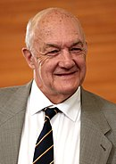
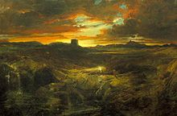
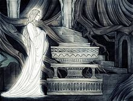
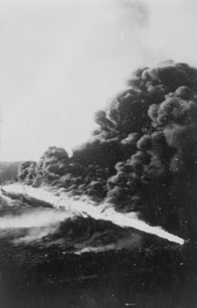

«Володар перснів» (також «Володар перстенів»; англ. «The Lord of the Rings») — епічний роман у жанрі «фентезі» англійського письменника, філолога та професора Оксфордського університету Дж. Толкіна. Оповідь почалася як продовження до попередньої роботи Толкіна, «Гобіт», але згодом розвинулась у набагато більшу історію. Її було написано поетапно між 1937 та 1949 роками, істотну частину — під час Другої світової війни. Роман є другим у світі бестселером, кількість проданих примірників якого перевищила 150 млн. Книга також входить у Рейтинг 100 найкращих книг усіх часів журналу Ньюсвік під номером 35 а у голосуванні The Big Read проведеного BBC 2003 року у Великій Британії роман посів перше місце.
На початку 2000-их з'явилося два неліцензійні українськомовні переклади Володаря перснів зроблені Олександром Мокровольським (Київ: Школа) та Аліною Неміровою (2003, Харків: Фоліо). А перші ліцензійні українськомовні переклади Володаря перснів, зроблені Оленою Фешовець (2003-2005) та Катериною Оніщук (2013), з'явилися трохи згодом у видавництві Астролябія яке поставило собі за мету "видати українською мовою всі твори Джона Рональда Руела Толкіна"
Хоча для більшості читачів роман відомий як трилогія, Толкін задумував його як перший том у двотомнику, другою книгою якого мав стати «Сильмариліон». Проте, коли Толкін подав у видавництво першу книгу під назвою «Володар Перснів» (The Lord of the Rings), з економічних міркувань було вирішено надрукувати її в трьох томах упродовж 1954—1955 рр. Відтоді книга неодноразово передруковувалася й перекладалася багатьма мовами[6], що зробило її одним з найпопулярніших та найвпливовіших літературних творів ХХ століття.
Назва книжки стосується головного антагоніста оповіді, Темного Володаря Саурона, який в ранню епоху створив Єдиний Перстень, щоб керувати іншими Перснями Влади і зрештою використати їх як знаряддя для завоювання і підкорення цілого Середзем'я. Оповідь починається в спокійному Ширі — землі гобітів, що немало нагадує англійську сільську місцевість, а далі розгортається в північно-західному Середзем'ї, описуючи перебіг Війни за Перстень з точки зору її героїв, а саме гобітів Фродо Беґінза, Семвайза Ґемджі, Меріадока Брендібака і Переґріна Тука, а також їхніх основних союзників та супутників: Араґорна, Боромира, Ґімлі, Леґоласа і Ґендальфа.
Назви трьох томів:
Історія відбувається в контексті історичних подій північно-західного Середзем'я. Задовго до початку роману, в 1600 році Другої епохи, Темний Володар Саурон викував Єдиний Перстень, щоб здобути владу над іншими перснями, які перебувають в руках вождів людей, ельфів та гномів. Він зазнає поразки в битві 3441 року Другої епохи, й Ісілдур, син Еленділа, відрубує Перстень разом з пальцем і називає його сімейною реліквією. Пізніше Ісілдура вбивають орки, а Перстень губиться в ріці Андуїн. Через дві тисячі років Перстень потрапляє до рук гобіта Деаґола, а від нього — до Смеаґола, який вбиває свого друга і відбирає Перстень. Смеаґола виганяють з селища, і він ховається в глибині гір, де за сотню років під впливом Персня перетворюється на жалюгідне, зіпсоване створіння — Ґолума. Згодом він губить Перстень, котрого, як про це оповідається в «Гобіті», знаходить Більбо Беґінз. Тим часом Саурон набуває нової фізичної форми і відвойовує Мордор, своє колишнє володіння. Ґолум вирушає на пошуки Персня, але потрапляє в полон до Саурона, який довідується від нього, що Перстень в Більбо Беґінза. Ґолума відпускають, а Саурон, якому потрібен Перстень, щоб повернути собі абсолютну владу, шле своїх темних, страхітливих слуг Назґулів відібрати Перстень.
Роман починається в Ширі, з моменту, коли Фродо Беґінз успадковує Перстень від Більбо, свого дядька і наставника. Обидвоє нічого не знають про його походження, але чарівник Ґандалф Сірий з'ясовує історію Персня і радить Фродо винести його з Ширу. Фродо покидає Шир, взявши з собою за супутників свого садівника і друга Семвайза Ґемджі та двох кузенів, Меріадока Брендібака і Переґріна Тука. Ще в Ширі вони мало не наражаються на Назґулів, але відриваються від переслідувачів, пішовши напрямки через Праліс, де їм допомагає таємничий і могутній Том Бомбадил, на якого Перстень явно не має впливу. Вийшовши з лісу, вони зупиняються в селищі Брі, де знайомляться з Араґорном, спадкоємцем Ісілдура, який приєднується до них в ролі провідника й охоронця. Вони втікають з Брі, ледве уникнувши нападу, але Назґули переслідують їх до сторожової гори Грозової і ранять Фродо проклятим кинджалом. Араґорн веде гобітів до сховку в Рівендолі, а тим часом Фродо мало не вмирає від рани. На броді Бруїнен Назґули нову атакують, але їх змітають хвилі повені, викликаної Елрондом, правителем Рівендолу, і загін рятується.
Фродо видужує в Рівен долі під наглядом Елронда. На Раді Елронда розкривається багато важливих фактів про Саурона і Перстень, а також повідомляється новина про те, що Саурон схилив на свій бік чарівника Сарумана. Рада приходить до думки, що загроза від Саурона є надто великою і що найкращим рішенням є знищити Перстень, кинувши його у Судну Гору в Мордорі, там, де його було викувано. Фродо погоджується взяти Перстень, а щоб супроводжувати й охороняти його формується «Братство Персня»: Сем, Мері, Піпін, Араґорн, Ґандалф, гном Ґімлі, ельф Леґолас і Боромир, син Денетора, правлячого намісника королівства Ґондор.
Не змігши подолати Імлисті гори через перевал Карадрас, загін проходить копальнями Морії, де на нього нападають орки. Ґандалф падає в безодню, борючись із древнім та жахливим Балроґом, що дає можливість іншим врятуватися. Загін ховається в ельфійському лісі Лотлорієні. Отримавши човни і подарунки від Володарки Ґаладріель, загін пливе вниз рікою Андуїн до вершини Амон-Ген. Там Боромир піддається спокусі Персня і пробує відібрати його від Фродо. Тоді Фродо втікає від Братства і сам-один вирушає до Мордору, але Сем пристає до нього, щоб допомагати й охороняти.
Тим часом, надіслані Сауроном та Саруманом орки вбивають Боромира і викрадають Мері та Піпіна. Араґорн, Ґімлі та Леґолас йдуть за орками в королівство Роган. Мері та Піпін рятуються, коли на орків нападають рогірими. Гобіти втікають до лісу Фанґорн, в якому вони заводять дружбу з деревоподібними ентами. В лісі, Араґорн, Ґімлі та Леґолас знаходять не гобітів, а Ґандалфа, який воскрес після битви з Балроґом і тепер є значно могутнішим «Ґандалфом Білим». Ґандалф запевняє їх, що гобіти в безпеці, і вони йдуть до Теодена, короля Рогану, щоб вивести його з пригніченого заціпеніння, заподіяного Саруманом, і допомогти рогіримам протистояти армії Сарумана. Теоден укріплюється у фортеці Гельмів Яр разом з Араґорном, Ґімлі та Леґоласом, а Ґандалф від'їжджає, щоб зібрати більше військо. Гельмів Яр беруть в облогу орки Сарумана, але Ґандалф прибуває з підкріпленням і розбиває орків.
Енти нападають на Ізенґард, оточивши Сарумана у вежі Ортханк. Ґандалф, Теоден та інші прибувають до Ізеґарда, щоб зіткнутися з Саруманом. Саруман відмовляється визнати помилковість своїх методів і Ґандалф позбавляє його чину та більшості його сил. Мері з Піпіном приєднуються до загону і Піпін заглядає в палантир, камінь яснобачення, за допомогою якого Саурон спілкувався з Саруманом. Це наводить Саурона на думку, що Саруман схопив Персненосця, через що Ґандалф відвозить Піпіна в Ґондор.
По дорозі до Мордору Фродо з Семом ловлять Ґолума, який ішов слідом за ними від Морії, і примушують його провести їх до Мордору. Виявивши, до через головні ворота Мордору пройти неможливо, вони йдуть до проходу, якого знає Ґолум. Ґолум зраджує Фродо, привівши його до великої павучихи Шелоб, що живе в тунелях Кіріт-Унґолу. Здається, Фродо вмирає від укусу Шелоб, але Сем відбиває її напад. Сем бере Перстень і примушує себе залишити Фродо. Орки знаходять тіло Фродо, і Сем виявляє, що Фродо насправді не мертвий, а непритомний. Фродо відносять до вежі Кіріт-Унґол, а Сем вирішує його врятувати.
Саурон розпочинає військову кампанію проти Ґондору. Ґандалф прибуває в столицю Ґондору Мінас-Тіріт з Піпіном, щоб попередити Денетора про навислу загрозу. Мінас-Тіріт беруть в облогу, і Денетор, під впливом Саурона через ще один палантин, втрачає надію і вчиняє самогубство. Араґорн, Леґолас та Ґімлі приходять до Ґондору через Стежину Мертвих, де Араґорн піднімає невмирущу армію порушників клятви, щоб збулося старе пророцтво. Примарна армія допомагає йому подолати корсарів Умбару, що захопили південний Ґондор, і вивільнені збройні сили разом з вершниками Рогану розбивають облогу Мінас-Тіріта.
Сем рятує Фродо, і вони пробираються через Мордор. Фродо слабшає, чим ближче вони підходять до Судної Гори, але Сем його підтримує. Тим часом, у вирішальній битві біля Чорної Брами Мордору об'єднані сили Ґондору й Рогану відчайдушно воюють зі значно чисельнішою армією Саурона, з наміром відвернути увагу Саурона від Судної Гори. Над самим проваллям вулкану Фродо не може опертися спокусі Персня і привласнює його. Тут з'являється Ґолум, бореться з Фродо і відкушує йому палець разом з Перснем, а тоді падає у вогняну лаву, забираючи з собою Перстень. Таким чином Перстень знищується. В цю мить Саурон гине, його армія відступає, вежі розсипаються в порох, Назґули зникають і Війна за Перстень неначе завершується. Араґорна коронують як Елессара, правителя Арнору і Ґондору, і він одружується зі своїм давнім коханням — Арвен, донькою Елронда.
Однак, тим часом Саруман втікає з полону і підкорює Шир. Повернувшись додому, четверо гобітів піднімають повстання і скидають його. Сарумана вбиває його колишній слуга Ґріма Червослов, котрого в свою чергу застрелюють гобіти-лучники. Таким чином, Війна за Перстень доходить до свого завершального кінця на самому порозі дому Фродо. Мері й Піпіна проголошують героями. За допомогою своїх дарів від Ґаладрієль Сем відновлює Шир і одружується з Розою Котон. Фродо не вдається зцілити ран тіла й душі, і через кілька років разом з Більбо і Ґандалфом він відпливає з Сірих Гаваней на захід, до Невмирущих Земель, де знаходить спокій. Після смерті Rosie Сем дарує своїй доньці «Червону Книгу Західної Марки», в якій описано історію та пригоди Більбо, Фродо, Сема, Піпіна та Мері. Тоді Сем, останній з Персненосців, вирушає за Море, на Заобрійний Захід.
Часопис The Sunday Times зазначало що «Світ поділяється на тих, хто вже прочитав Володаря Перстенів і Гобіта, і тих, хто тільки збирається прочитати ці книги» .[7] А часопис New statesman підкреслювало, що «Володар перснів - це чарівно розказана історія, з переливами усіх барв, руху та величі»
Толкін був ученим-філологом[К. 1], професором Оксфордського університету[8]. Він наголошував, що його твори «мають філологічний характер»: на створення «Володаря Перснів» його «надихнуло в основі своїй мовознавство… Творення мов є основою. Скоріше „історії“ складалися для того, щоб створити світ для мов, ніж навпаки. У мене спершу виникає ім'я, а вже потім — історія … для мене цей твір чималою мірою — есе з „лінгвістичної естетики“»[9]. У листі до сина Крістофера Толкін розповідав:

Резонність цих висловлювань письменника, які попервах не сприймалися всерйоз більшістю літературних критиків, уперше була обґрунтована філологом Томом Шиппі, який викладав у Оксфорді ті ж дисципліни, що й Толкін[12][13][14]. Згідно з Шиппі, творчий метод автора «Володаря Перснів», «творення через філологію», лежить «в самому серці толкінівського „вимислу“»[15]. І у своїй науковій діяльності, і в літературній творчості він ішов від мовних побудов до будь-яких інших[16]. Винахід Толкіном споріднених між собою ельфійських мов і поміщення їх у певний історичний контекст у рамках вигаданого світу можна порівняти з процесом реконструкції за допомогою філологічних методів зниклих стародавніх мов, таких як праіндоєвропейська чи готська
Для Толкіна, «справжнього філолога», кожне конкретне слово було не окремою, обмеженою одиницею, а частиною системи, яка розвивається протягом історії та включає походження слова, його аналоги в інших мовах, споріднені й похідні слова, а також «процеси культурних змін, на які може натякати його історія»[19][16]. Для нього існувала принципова різниця між «старими, традиційними, справжніми» словоформами і «новими, неісторичними, помилковими». Наприклад, походження англійських слів, що закінчуються на букву f, можна простежити по тому, як вони виглядають у множині — слова, успадковані з давньоанглійської мови, утворюють множину подібно до того, як loaf стає loaves, до нових же слів лише додається закінчення s — як у proofs. Тому загальноприйняте на той час написання слів «гноми» як dwarfs і «ельфи» як elfs було для нього категорично неприйнятним, «рівносильним спробі позбавити слово його віку й коріння». Виходячи з подібних міркувань Якоб Грімм за кілька десятиліть до Толкіна позбавив німецьку мову від запозиченого з Англії слова Elfen, відновивши його споконвічну форму — Elben. Коли коректор першого видання «Володаря Перснів» із найкращих, як йому здавалося, мотивів послідовно привів у відповідність до загальноприйнятих правил толкінівських elves і dwarves, письменник наполіг на тому, щоб повернули його варіант[
Шиппі на низці прикладів демонструє, як саме працював філологічний метод письменника. Слово «енти», яким Толкін найменував деревних велетнів із лісу Фанґорн, зустрічається в давньоанглійській поемі «Maxims II», у якій римські дороги названі orþanc enta geweorc — «майстерною роботою ентів», велетнів-будівельників із далекого минулого. Назва завойованої ентами вежі Ортанк, імовірно, також запозичена з цієї фрази, яка може бути прочитана як «Ортанк, фортеця ентів»[21][22]. Зі свого боку, ім'я колишнього правителя вежі, чарівника Сарумана, походить від давньоанглійського слова searu в його давньомерсійському варіанті saru, яке означає «майстерний, умілий, винахідливий» і водночас має конотації, пов'язані зі зрадою, а в поєднанні з cræft означає машину. Розмаїтість значень слова безпосередньо проявляється в образі персонажа, який зраджує своїх сподвижників і служить у романі «втіленням індустріалізму»
На творчості Толкіна значною мірою відбився його інтерес до епосу й міфології народів Європи. Серед головних джерел натхнення письменника — давньоанглійська поема «Беовульф», скандинавська міфологія та фінський епос «Калевала»[25]. Розглядаючи в контексті літературних впливів творчість його послідовників у жанрі фентезі, історик культури Сергій Алексєєв відзначив, що в пошуку джерел натхнення для своїх творів їм часто нічого не лишається, крім наслідування Толкіна:
Ім'я чарівника Ґандальфа запозичене зі «Старшої Едди», де в списку імен гномів дещо непослідовно з'являється «ельф із чарівним посохом»[28][29]. Одним із прототипів персонажа Толкін називав Одіна — верховного бога в скандинавській міфології. Мандруючи Мідґардом, Середзем'ям давніх скандинавів, Одін постає у вигляді старого сивобородого чоловіка з посохом, у плащі та в крислатому капелюсі. Усі ці атрибути присутні й у Ґандальфа у «Володарі Перснів». Чарівнику цілком підійшли б такі прізвиська Одіна, як «Крислатий капелюх», «Довга борода», «Сива борода», «Носій посоха», «Стомлений подорожній» і «Мандрівник»[30]. Обидва персонажі пов'язані з орлами (Ґандальфа звільняє з полону орел, Одін же врятовується з Йотунгейму, обернувшись на орла), володіють надприродним конем (Слейпнір в Одіна й Тіньогрив у чарівника) і протистоять вовкам (під час Рагнарока Одіну доведеться загинути у двобої з величезним вовком Фенріром, Ґандальф же, навпаки, виходить переможцем у бою з варгами, що оточили його соратників біля Воріт Морії)[31].
Проте, в дійсності у скандинавських міфах Одін має вкрай неоднозначну репутацію. У розлогому переліку прізвіськ скандинавського бога сусідять такі характеристики, як «Шукач правди» та «Сіяч розбрату», «Бажаний гість» і «Володар зради». Відповідно, його негативна іпостась представлена в романі в особі головних лиходіїв історії — злого чарівника Сарумана й Темного Володаря Саурона. Подібно до Одіна, якому служать вовки та круки, Саурон і Саруман повелівають зграями варгів; круки у «Володарі Перснів» відсутні, однак зловісну роль цих птахів як вісників війни й падальників виконують їх родичі-ворони, які перебувають на службі у володаря Ісенґарду. Подібно до Одіна, Саруман іноді подорожує під виглядом закутаного в плащ старого чоловіка, який носить каптур або крислатий капелюх, чим нагадує Ґандальфа. Прізвиська Одіна «Одноокий» і «Вогнеокий» співвідносяться з обрамленим вогнем Оком Саурона[32][33].
Образ персня, що дарує владу над світом, є центральним в оперному циклі Ріхарда Вагнера «Перстень Нібелунга», заснованому на сюжетах германо-скандинавської міфології. Сам Толкін, однак, на порівняння з твором Вагнера одного разу відповів, що «обидва персні були круглими, і на цьому подібність закінчується»[34]. Незважаючи на це, якщо властиві обом творам мотиви зламаного меча героя та проклятого персня, що приносить нещастя, пояснюються загальними джерелами в міфології, то образи «володаря Персня» і «раба Персня» — ідея безпосередньо вагнерівська. Існує подібність і між Фафнером і Ґолумом: обидва заради володіння перснем убили свого близького родича, й обох це змінило до невпізнання[35]. Ряд дослідників вважає, що порівняння з «Перснем Нібелунга» зачіпали Толкіна, оскільки він був знайомий з давньою традицією в оригіналі, Вагнер же працював з її переробками і, на думку Толкіна, у своїй інтерпретації обійшовся з оригінальним матеріалом занадто вільно
На створення Рогану, країни вершників, Толкіна надихнув англосаксонський період англійської історії. Жителі Рогану, рогірими, називають свою країну «Маркою» — ця назва відсилає до англосаксонського королівства Мерсія, що колись займало центральну частину Англії. Слово «Мерсія» є латинізмом: справжня давньоанглійська назва цієї країни не збереглася, проте в реконструйованому варіанті вона так і звучить — «Марка» (давн-англ. Mark). Символ Рогану, білий кінь на зеленому полі, походить з тих самих місць. Поблизу Оксфорда, в районі кордону стародавньої Мерсії та Вессекса розташований Уффінгтонський білий кінь — величезна крейдяна фігура коня, висічена на схилі вкритого зеленою травою пагорба. У романі рогірими розмовляють на давньомерсійському діалекті англосаксонської мови, що скрізь відображено в їхніх іменах і назвах[38][39]. Зокрема, іменами короля Теодена й майже всіх його попередників на роганському престолі послугували різноманітні давньоанглійські слова зі значенням «король»
Утім, між культурами стародавніх англійців і рогіримів є одна виразна відмінність — їх ставлення до коней. Якщо Роган неможливо уявити без кінноти, то англосакси, навпаки, воліли воювати пішими. Ця обставина стала основною причиною їх поразки в битві при Гастінгсі, результатом якої стало Норманське завоювання Англії. Пояснити цю суперечність можна тим, що при створенні Рогану Толкін звертався не до історичного, а до «пісенного» образу англосаксів — у поетичній традиції цього народу коням віддавали набагато більшу пошану, ніж у реальному житті
Медусельд, Золоті Хороми короля Теодена, перекликається з Георотом — палацом короля Гродґара з давньоанглійського епосу «Беовульф». Коли Леґолас говорить про нього: «блиск його видно здалеку», він достеменно цитує 311-й рядок поеми. Як і Беовульфа, Ґандальфа та його супутників на шляху до короля по черзі зупиняє варта, а біля дверей палацу від них вимагають скласти зброю. Попри сумніви, охоронець бере на себе відповідальність і пропускає Беовульфа — брамник Теодена в схожій ситуації також вирішує довіритися чужинцям і дозволяє їм увійти до короля. Як відзначає літературознавець Том Шиппі, Толкін «скористався нагодою висловити сучасною мовою істини, які для англосаксів були б очевидні, — зокрема, що свобода не є прерогативою демократій і що у вільних суспільствах навіть накази залишають місце вибору… „Я лише виконував накази“ у Вершницькій Марці не прийняли б за виправдання»[
Розселення на трав'янистих рівнинах, опора на кінноту та сусідство з давньою імперією зближує рогіримів з іншим германським народом – готами, що жили в українських степах на північ від кордонів Римської імперії. Відомий переказ, за яким слово «готи» перекладається як «кінний народ». Предки рогіримів, що населяли просторі рівнини Рованіону на сході, носили готські імена — Відуґавія, Відумаві, Вінітар'я, Мархвіні[44][45][46]. Битву на Пеленнорських полях, перемога в якій була затьмарена загибеллю короля Рогану, придавленого власним конем, порівнюють із битвою на Каталаунських полях 451 року. У ній цивілізація Заходу також протистояла «східнянам», а король готів Теодоріх був затоптаний своїми переможними вершниками і, подібно до Теодена на Пеленнорі, загинув «у такому ж ореолі скорботи і слави»
Образ ельфів займає особливе місце у творчості Толкіна. Історії про них він створював більшу частину свого життя, і в жоден інший народ, якими він населив Середзем'я, він не вклав стільки творчої енергії та любові[48]. Толкін не переносив розпочату Шекспіром та властиву Вікторіанської епосі тенденцію зображати ельфів як крихітних крилатих істот і звертався до споконвічної традиції, що походить із середньовічних джерел, у яких ельфи постають могутніми надприродними створіннями, що не поступаються у зрості людям[49][50]. Однак при найближчому розгляді образи ельфів у історіях різних народів Північно-Західної Європи виявляють безліч протиріч і неоднозначностей. Якщо скандинавські світлі альви з «Молодшої Едди» нагадують ангелів, то збережена давньоанглійська традиція наділяє ельфів низкою негативних характеристик і асоціацій. На сторінках «Беовульфа» вони з'являються у вельми сумнівній компанії разом з орками, велетнями й іншими «нащадками Каїна»[51][52]. «Ельфійський постріл» в уявленні стародавніх англійців — внутрішнє захворювання, що з'являється внаслідок ураження людини невидимою стрілою, випущеною ельфом, таке як ревматизм чи серцевий напад[53][54]. Водночас комплімент жінці в англосаксонському суспільстві — «ельфійськи прекрасна»[55][53]. На честь ельфів англосакси називали своїх дітей, вважаючи, що це принесе їм удачу — Ельфвін, Ельфстан, Елвін, Альфред[56][53]. Середньовічний англійський поет Лайамон повідомляє, що короля Артура відразу після його народження взяли до себе ельфи, від яких повернувся з цінними дарами. Після своєї останньої битви смертельно поранений Артур відбуває на острів Авалон, де на нього чекає ельфійська королева, яка зцілить його
Толкін, узявши до уваги всі ці відомості, зробив спробу своєрідної художньої реконструкції гаданої початкової, несуперечливої традиції, формуючи цілісний і послідовний образ[58][59]. Його ельфи прекрасні, величні й благородні[60][61], а негативні риси, які їм приписує середньовічна традиція, віднесені до розряду хибних уявлень, які побутують серед необізнаних людей[62][63]. Вираз «ельфійський постріл» постав у своєму буквальному значенні, знайшовши відображення в улюбленому ельфами мистецтві стрільби з лука[64]. Характерна для їхнього сприйняття серед людей суміш страху і привабливості пояснюється тим, що краса сама по собі небезпечна — як пояснює Сем, Ґаладріель «можна назвати небезпечною, бо вона така сильна … можна розбитись об неї на друзки, мов кораблю об скелі; або потонути, мов гобіт у річці. Та ні скеля, ні річка не винні»[65]. Обігрується традиційний мотив іншого перебігу часу в ельфійській землі — залишивши Лорієн, члени Братства обмірковують, скільки ж часу вони насправді в ньому пробули[58]. На думку Тома Шиппі, «сильна сторона толкінівських „реконструкцій“ у тому, що вони вбирають у себе всі наявні свідчення й намагаються пояснити як добрі, так і погані сторони загальновідомих історій». У суперечливій реакції на ельфів від різних героїв «Володаря Перснів» можна побачити зародження «традицій, що збереглися в нашому світі»
За словами Толкіна, основою для Ширу послугувала сільська Англія: «це певною мірою ворикширське село приблизно часів Діамантового ювілею»[К. 3]. Про гобітів він відзивався, як про сільських англійців; їх малий зріст вказує на «властиву їм здебільшого обмеженість уяви — але аж ніяк не нестачу сміливості й прихованої сили»[69]. Слово «Шир» повторює історичне найменування адміністративної одиниці, що є складовою назв багатьох англійських регіонів, як-от Беркшир чи Оксфордшир[70]. Історію країни гобітів Толкін вибудовував за аналогією з традиційною історією Англії[71]. Подібно до англосаксів, які під час переселення на острів складалися з англів, саксів і ютів, гобіти прибули в Шир у складі трьох племен, які згодом перемішалися між собою, утворивши єдиний народ. Предки англійців спершу населяли «кут» між Фленсбурзьким фіордом і бухтою Шлей, гобіти — місцевість Кут, розташовану між річками Мітейтель та Бруїнен. При переселенні англійців очолювали брати Хенгіст і Хорса, чиї імена означають «жеребець» і «кінь», гобітів — Мархо та Бланко (від давн-англ. marh — «кінь» і blanca — «білий кінь»). Обидві країни пережили тривалий період миру, коли протягом багатьох років на їхній території не відбувалося бойових дій. Період між двома битвами в історії Ширу тривав 272 роки. Для порівняння, з часів останньої битви, що відбулася на території Англії (битва при Седжмурі 1685 року), на момент публікації «Володаря Перснів» минуло 270 років
У студентські роки на Толкіна справив глибоке враження фінський епос «Калевала», сформований фольклористом Еліасом Леннрутом на основі зібраних ним народних рунічних пісень. Толкіна засмучувала надзвичайна вбогість збереженої англійської фольклорної спадщини, тому відтворена в «Калевалі» фінська міфологія по-особливому вразила його, надихнувши на створення власної «міфології для Англії». За словами письменника, початок його легендаріуму поклала спроба втілити у власну форму історію про Куллерво, одного з центральних героїв «Калевали», яка згодом переросла в оповідь про Туріна Турамбара. Фінська мова, що полюбилася Толкіну, послужила основою для квеньї, мови високих ельфів
Том Бомбадил, найзагадковіший персонаж «Володаря Перснів», має чимало спільного з одним із головних героїв «Калевали», Вейнемейненом. Могуть Вейнемейнена і Тома знаходиться в їхньому голосі — за допомогою слів і пісень вони керують своєю землею і перемагають ворогів. Водночас сила їхніх пісень заснована скоріше на знаннях, ніж на владі й пануванні[75][76]. Інша спільна риса персонажів — їхня древність. Герой фінського епосу був присутній під час створення світу, а Том так само є найстаршим жителем Середзем'я[77]. Мудрість, численні прожиті роки й відплиття в безсмертні землі після завершення своєї місії також зближують із Вейнемейненом Ґандальфа[78][79].
В образі Боромира, особливо в описі його останнього бою, знаходить відображення сюжет старофранцузької «Пісні про Роланда». Подібно до героя епосу, Боромир є видатним полководцем, «правою рукою» свого правителя; недоліком обох є гордість. Як і Роланд, Боромир трагічно гине в дикій місцевості вдалині від рідної країни, захищаючи своїх супутників від переважаючих їх числом ворогів, і перед смертю сурмить у великий ріг, закликаючи союзників, проте допомога до нього надходить надто пізно[80][81].
Помітний вплив на «Володаря Перснів» справила середньовічна Артуріана. Зі «Смертю Артура» Томаса Мелорі перетинається повторюваний у творчості Толкіна мотив світлого королівства, що оточене ворожими силами, але таїть свою загибель у собі — від Ґондоліна Першої Епохи до Нуменору, Арнору й Ґондору[82]. Образ Ґандальфа як мудрого чарівника і наставника значною мірою повторює роль Мерліна[83][84]. Араґорн — нащадок королівського роду, що підтверджує своє право на престол славетним мечем, отриманим від ельфів, і який володіє цілющим даром — персонаж у дусі короля Артура[85]. Ґаладріель має подібність до Володарки Озера та феї Морґани[86][87], а Фродо, за словами Толкіна, отримав «артурівський фінал» із відплиттям на острів Тол Ерессеа — аналог Авалону
З Едмундом Спенсером, англійським поетом XVI століття, Толкіна пов'язує його власне уявлення про те, як слід зображати ельфів у літературі. Поема «Королева фей» протягом трьох століть залишалася останнім твором, у якому було збережено істинний образ ельфів із середньовічного фольклору — мудрих і величних, рівних за ростом людям. Образи «ельфів-воїнів, ельфів як „політичної“ та військової сили, ельфійського королівства, що бореться з інфернальним злом» – у англійській літературі все це вперше з'явилося саме в Спенсера. Втім, відверта алегоричність «Королеви фей» знижувала її цінність в очах Толкіна[89]. Також літературознавцями відзначається виразна перекличка вірша Більбо про Араґорна («Із жарин вогонь розгориться, / І світло із тіні сяйне…») з видінням Мерліна про майбутнє відродження Британії в Спенсера: «Іскра вогню, яка давно таїлася серед попелу, знову розгориться…»
У «Володарі Перснів» зустрічається чимало алюзій на твори Вільяма Шекспіра. Образ Темної Вежі як оплоту ворога, до якого прямують герої — ймовірний натяк на рядок із п'єси «Король Лір» «Чайлд Роланд підходить до Темної Вежі». Напевно, ці слова походять з якоїсь нерозказаної драматургом і нині втраченої балади, що цілком могло наштовхнути Толкіна на думку розповісти про Темну Вежу самому
Толкін говорив, що роль ентів у його романі обумовлена «гірким розчаруванням і відразою ще зі шкільних днів до того, як жалюгідно Шекспір обіграв прихід „Великого Бірнамського лісу на високий Дунсинанський пагорб“»: у «Макбеті» пророцтво про похід лісу на замок втілюється у вигляді воїнів, які несуть гілки дерев для приховування своєї чисельності. За словами Толкіна, він «прагнув створити ситуацію, в якій дерева й справді могли б піти на війну»[96][97]. Інша помітна паралель із «Макбетом» проявляється в сцені, де Еовін захищає Теодена від володаря назґулів. Існувало пророцтво про те, що Король-Чаклун не помре від руки «смертного чоловіка», тому він розгублюється, коли дізнається, що воїн, який йому протистоїть, — жінка. Під час двобою з Макдуфом Макбет також впевнений у своїй невразливості — згідно з пророцтвом, йому не міг зашкодити «той, хто народжений жінкою». Проте Макдуф відповідає, що він «вирізаний до строку / ножем з утроби матері», після чого вбиває свого ворога
Під час роботи над романом Толкін зазначав, що Сем «поводиться з Ґолумом, приблизно як Аріель із Калібаном». Слідом за письменником дослідники його творчості запропонували інші паралелі з «Бурею» Шекспіра. Подібно до Калібана, Ґолум примушений служити за допомогою чарів, вважає, що господар привласнив те, що належало йому по праву, і влаштовує змову проти нього. При цьому, на відміну від шекспірівської сатири, у Толкіна ці обставини подаються трагічно — як і численні автори подальших творів про Калібана, він, схоже, не бачив у цій історії матеріалу для комедії. Водночас, він не виставляє свого «Калібана» в позитивному світлі, в чому не збігається з письменниками, які реабілітують шекспірівський образ, позиціонуючи персонажа як «шляхетного дикуна» або «невільника, який повстав проти гноблення»
Серед близьких за часом авторів найбільший вплив на Толкіна справив англійський письменник XIX століття Вільям Морріс — фактичний фундатор жанру епічного фентезі. Творчість Морріса стала для Толкіна взірцем того, як слід створювати роман, зокрема прикладом для таких особливостей «Володаря Перснів», як ретельна увага до географії вигаданого світу й мальовничі описи природи. Моррісівські вольфінги, змодельовані за зразком ранніх германських племен, стали взірцем для способу життя та суспільного устрою толкінівських північан і, почасти, їх нащадків — рогіримів. І вольфінги, і рогірими називають свою країну «Маркою», а символом заклику до війни в них слугує червона стріла. Спільним мотивом для них є протистояння цивілізованому й технічно оснащеному, але водночас жорстокому та безжалісному ворогові (Рим у Морріса й Ісенґард у Толкіна), на тлі якого вольфінги й рогірими, які мають багату культуру та захищають власну свободу, сприймаються як цілком розвинуті суспільства. Втім, тема боротьби «благородних варварів проти цивілізованих загарбників» у Толкіна виявляється пом'якшена тією обставиною, що Роган є союзником значно розвиненішого Ґондору. У романі Морріса «Корені гір» вольфінги та їхні невойовничі союзники з торгово-ремісничого міста Боргдейла протистоять уже прибульцям зі сходу, своєрідному фентезійному еквіваленту гунів — у Толкіна цей сюжет відобразився в навалі союзних Мордору східнян на Діл (англ. Dale), торгове місто в північному Середзем'ї
У юності на Толкіна справив сильне враження роман Райдера Гаґґарда «Вона», у центрі сюжету якого — прекрасна й згубна Аєша, королева стародавнього народу, що зберігся в потаємній місцині в глибинах Африки. У «Володарі Перснів» вона стала одним із прообразів Ґаладріелі, володарки лісових ельфів. І Аєша, і Ґаладріель є безсмертними, мають неперевершену красу й правлять територіями, ізольованими від навколишнього світу. Обидві героїні володіють «дзеркалом» — посудиною або чашею з водою, у якій можна побачити минуле і сьогодення, і водночас заперечують, що властивості цих «дзеркал» мають щось спільне з чародійством. Особливо ж подібність між ними проявляється в сцені, у якій Фродо пропонує Ґаладріелі взяти собі Єдиний Перстень, де вона на мить постає в образі грізної й величної повелительки в дусі Аєші. І хоча на відміну від Аєші Ґаладріель у Толкіна зображена в позитивному світлі, піддавшись спокусі володіння Перснем вона цілком могла б уподібнитися до «демонічної» гаґґардівської героїні
Ключовий для «Володаря Перснів» мотив героїчного квесту на тлі глобального протистояння добра і зла в повноцінному вигаданому світі зближує Толкіна з творчістю Вільяма Гоупа Годжсона. У романі «Нічна земля» Годжсон зобразив світ далекого майбутнього, де землю заполонила пітьма, а останній оплот людства — Піраміда — оточена потойбічними, відверто демонічними силами зла. Подібний образ покритої темрявою країни зла у Толкіна втілено в описі Мордору. Сяюча блідим світлом фортеця Мінас-Морґул, у яку ледь не потрапляє Фродо, підкорившись силі, що раптово оволоділа ним, перекликається з Обителлю Безмовності, осереддям зла в романі Годжсона, яка також світиться й здатна впливати на людей, притягуючи їх до себе. Ті, хто піддався поклику Обителі й перетнув її ворота, вже не повертаються. У Годжсона за останньою твердинею людей спостерігають майже нерухомі, але наділені розумом і ворожою волею Вартові — дуже схожі на них кам'яні, але немовби живі фігури намагаються зупинити Сема перед воротами вежі Кіріт-Унґол. Епізод бою Сема з Шелоб у Толкіна багатьма деталями нагадує опис боротьби з чудовиськом героя «Нічної землі»
Назґул — постать, подібна до тіні, у якої під каптуром замість обличчя криється порожнеча, втілює боеціанську ідею неіснування зла, яке по суті є лише відсутністю добра, «нічим». Водночас, цей образ переконливо ілюструє, що навіть «ніщо» може мати неабияку могутність
У своїй книзі «Дорога в Середзем'я» Том Шиппі пропонує розглянути «Володаря Перснів» як спробу Толкіна примирити два традиційні погляди на природу зла: «обидва походять з давніх-давен, обидва авторитетні, обидва існують до цього дня і, здавалося б, один одному суперечать». Перший погляд походить із християнської традиції, сформульований Августином, а найповніше представлений у трактаті Боеція «Розрада від філософії». Згідно з цією концепцією зла як такого існує, зло — це «ніщо», відсутність добра. Отже, зло не здатне нічого створити, воно й саме не було створене, а його поява стало результатом зловживання свободою волі. У романі цю думку висловлює Фродо: «Тінь, що їх [орків] породила, може лише насміхатися — вона не здатна творити щось своє та справжнє». Відповідно до цього переконання Ельронд заявляє, що «ніщо не є злом на початку. Навіть Саурон не був злий»
Водночас, існує інший погляд на природу зла, який, на відміну від вчення Боеція, ніколи не мав жодного «офіційного» статусу. З цього погляду питання природи зла цілком може бути предметом філософських розмірковувань, але з повсякденного досвіду неминуче випливає, що зло все ж таки існує і йому необхідно протистояти. У своєму крайньому прояві такий погляд близький до маніхейства — єресі, згідно з якою Добро і Зло є рівними противниками, а всесвіт — місцем їхнього протистояння. Проте, як зауважує Шиппі, «цілком можливо уявити концепцію природи зла, яка би йшла далі від Боеція, але зупинялася б саме там, де починається маніхейство» — саме така була сформульована в IX столітті королем Альфредом Великим у коментарях до його власного перекладу «Розради від філософії»
У романі Толкіна філософська проблематика природи зла — прояву внутрішньої слабкості людини (за Боецієм), або ж зовнішньої самостійної сили, послідовно відображається через образ Персня: передаючи його чарівникові, Фродо відчуває, що Перстень «дуже поважчав, так наче чи то йому самому, чи то Фродо не хотілося, щоби до нього доторкався Ґандальф»[108]. Символічно ця ідея представлена в образі Тіні, яка за своєю суттю — не більше, ніж відсутність світла, як і зло — відсутність добра, і, отже, сама по собі не існує, але водночас її можна побачити й відчути так, якби вона існувала[109]. Особливо виразно такий образ зла представлений у сцені штурму брами Мінас-Тіріта армією Мордору:
Крім того, Том Шиппі звертає увагу на «приховану іронію», яка міститься в іншому, більш приземленому образі зла, представленому в романі — в орках, у яких, «що цікаво, все ж таки є деяке уявлення про чесноти»[111]. Як випливає з епізодів за участю орків, їхні основні моральні принципи насправді мало чим відрізняються від людських — вони «усвідомлюють поняття добра, цінують гумор, дорожать відданістю, довірою, згуртованістю колективу, прагнуть до вищих ідеалів, ніж їхні власні, і засуджують тих, хто цим ідеалам не відповідає». У розмові двох орчих командирів один із них із явним осудом висловлюється про вчинок супутника Фродо, який, на його думку, кинув свого пораненого товариша: «Мабуть, здоровань із гострим мечем не дуже його цінував — просто лишив, де той лежав: типова ельфійська манера». Проте, згодом у цій же розмові з'ясовується, що саме так орки, власне, і вчиняють — один із співрозмовників згадує як жарт історію про «старого Уфтака», що потрапив у пастку Шелоб, над яким його товариші-орки вдосталь насміялися, так і залишивши в результаті помирати. Шиппі приходить до висновку, що орки, маючи виразне уявлення про моральні принципи, зовсім не керуються ними у своїй реальній поведінці: «Безперечно, це одне з життєво важливих питань, що набули особливого значення протягом XX століття, коли найстрашніші звірства часто вчинялися найбільш цивілізованими людьми … Поведінка орків — це людська поведінка, а їхня нездатність оцінювати свої вчинки за власними ж моральними критеріями — проблема, на жаль, давно відома. Орки та їх двійники серед людей — це споконвічна проблема та споконвічний тип»
За словами Толкіна, «Ґандальф як Володар Персня виявився б набагато гіршим за Саурона. Він залишився б „праведним“, але надто самовпевненим … У той час як Саурон примножував зло, він залишав „добро“ чітко від нього відмінним. Ґандальф зробив би добро огидним, тотожним злу»
Центральне місце в романі займає тема влади[114]. На думку Тома Шиппі, в основу «Володаря Перснів» покладено знамените висловлювання лорда Ектона: «Влада має тенденцію псувати, а абсолютна влада псує абсолютно. Великі люди — майже завжди погані люди…». Цей афоризм датований 1887 роком і має виразно сучасний, невластивий уявленням людей давнини характер. Втіленням цієї ідеї в романі є Перстень, який має властивість навертати до зла всіх, до кого він потрапляє, незалежно від того, чи були спочатку добрими їхні наміри. Згідно з Толкіном, Перстень уособлює «бажання самої влади, що прагне реалізуватися за допомогою фізичної сили й техніки, а також неминуче за допомогою брехні». Шиппі звертає увагу на гнівну відмову Ґандальфа взяти Перстень:
Не спокушай мене! Бо я не хочу бути подібним до Темного Володаря, хоча шлях Персня до мого серця лежить через жаль, жаль до слабких і бажання робити добро. Не спокушай мене. Я не наважуюся взяти його, навіть аби зберігати не зачіпаючи. Бажання заволодіти ним буде непереборне
Дослідник відзначає, що відмова чарівника від Персня «має сенс в епоху, яка бачила чимало свиней, що стали фермерами». До чого призводить одне тільки бажання володіти Перснем, виразно ілюструє приклад Боромира — він керується патріотизмом і переконаний, що «щирій людині» він не здатний зашкодити. Проте, хоча Боромир і не каже цього безпосередньо, у його промовах постійно простежується принцип «мета виправдовує засоби». За допомогою Персня він має намір отримати силу «для праведної справи», щоб захистити свою країну, але, як зауважує Шиппі, «наш сучасний досвід влади диктаторів одразу підказує нам, що на цьому, зазвичай, ніхто не зупиняється»[
Безпосередньо негативний образ політичної влади у «Володарі Перснів» представлений військово-деспотичним порядком, який було встановлено Сауроном у Мордорі та Саруманом — в Ісенґарді. Їхня економіка заснована на рабській праці й зосереджена на нещадній експлуатації природних ресурсів аж до їх повного виснаження, промисловість працює виключно для військових потреб і цілеспрямованого забруднення навколишнього середовища, а терору піддаються не тільки вороги, а й солдати власної армії. Прагнення Сарумана оточити себе «безліччю рабів і машин» відображає його нездатність сприймати інші створіння в їхній цілісності та індивідуальності. Для подібного «мордорського» світогляду всі особи зводяться до однорідної маси, яка потребує управління нею. Зі свого боку, вільні народи Середзем'я здобувають перемогу, усвідомлюючи важливість вільного вибору та значущість дій «маленьких і слабких» особистостей, які не мають суттєвої влади[118]. За словами Толкіна, роман повинен «якомога виразніше проілюструвати повторювану тему: яке місце займають у „світовій політиці“ непередбачені й непередбачувані волевиявлення та гідні вчинки тих, хто на перший погляд малий, невеликий, забутий у середовищі Мудрих і Великих (як добрих, так і злих)»
За словами Толкіна, «Фродо — справжнє ім'я з германської традиції. Його давньоанглійська форма — Froda. Воно очевидно пов'язане зі старим словом frod, що етимологічно означає „мудрий завдяки досвіду“, але також мало міфологічні зв'язки з легендами про Золоту добу на Півночі»[119]. Зокрема, у «Беовульфі» під цим ім'ям згадується правитель племені хадобардів. Скандинавська традиція, зі свого боку, оповідає про легендарного короля-миротворця Фроді (давньоскан. Frothi — «мудрий»), сучасника Христа. Під час його правління настав тривалий період миру — припинилися вбивства, війни та грабежі, золоті персні, які лежали в усіх на очах, залишалися незайманими. Однак, у підсумку король зазнав поразки — як особистої (його вбили вікінги), так й ідеологічної (його син, відомий своєю войовничістю й віроломством, був повною протилежністю батькові)
Фродо у Толкіна також є миротворцем, а наприкінці історії стає майже пацифістом. З моменту, коли він завдає удару кинджалом тролю в Морії, його світогляд зазнає значних змін — спочатку він не наважується вбити взятого в полон Ґолума, потім рятує його від ґондорських лучників, хоча Сем у цій ситуації волів би не втручатися. У Мордорі Фродо віддає Сему свій меч, взявши собі лише орківський клинок, але згодом кидає і його зі словами: «відтепер я не матиму жодної зброї — ні гарної, ні брудної». Під час визволення Ширу він намагається запобігти вбивствам і захищає полонених ворогів, а Сарумана відпускає навіть після того, як той ледве не вбиває його. Щоправда, Толкін демонструє очевидну нежиттєздатність такого світогляду — на практиці про те, щоб переконати загарбників лише силою слова, не застосовуючи зброї, не могло бути й мови, і Фродо виявляється неспроможним знайти переконливі доводи проти цього
Незважаючи на успішне завершення своєї місії, подальша доля Фродо, як і його легендарного прототипу, складається невдало. Том Шиппі звертає увагу на тенденцію, яка полягає в тому, що видатні звершення, які не вкладаються у звичний шаблон героїчної історії (такі, як подвиг Фродо та «мир Фроді»), часто забуваються або ж у переказах змінюються до невпізнанності. У народній пам'яті Фродо «подався до Чорної Країни, і сам-один бився з Темним Володарем, і … підпалив його Вежу». Шиппі робить висновок, що в результаті, як сказав Мільтон, «найкращі звитяги терпіння й героїчного мучеництва лишаються неоспіваними». На батьківщині Фродо незаслужено опиняється в тіні своїх друзів, які прославилися на бойовищі — відомо, що у своїй вітчизні пророки залишаються без честі. Водночас на завершальному етапі оповіді Фродо й справді все більше нагадує пророка
Значний вплив на творчість Толкіна справила його участь у Першій світовій війні. На думку біографа письменника Джона Ґарта[en], зараз важко уявити, як би виглядали твори Толкіна, якби не пережитий ним воєнний досвід. Зокрема, чи були б вони зосереджені на протистоянні добра і зла, і чи набули б добро і зло такої ж форми; яка доля спіткала б ключові для творчості письменника теми смерті та безсмертя, евкатастрофи[en][К. 5], значущості простих людей у подіях історичного масштабу[129]. Том Шиппі у статті «Толкін як післявоєнний письменник» відносить «Володаря Перснів» до однієї категорії з такими творами, як «1984» і «Колгосп тварин» Джорджа Орвелла, «Володар мух» Вільяма Ґолдінґа, «Король минулого і майбутнього» Теренса Генбері Вайта та «Мерзенна сила»[en] Клайва Стейплза Льюїса. Як і Толкін, їхні автори пережили дві світові війни, майже всі (за винятком Вайта) воювали і, виходячи з власного досвіду, досліджували у своїй творчості проблематику природи зла, водночас вдавшись до свідомо «нереалістичних» жанрів, оскільки «відчували, що тема людського зла не може бути достовірно зображена засобами лише реалістичної художньої літератури»
Німецький вогнемет часів Першої світової війни. У «Володарі Перснів» щось подібне до нього використав Саруман для підпалення ентів
Баюри захлиналися від попелу та грязюки, синювато-сизі й сірі, неначе гори виблювали на ці землі весь бруд зі свого нутра. Високі горби потовченого каміння, конуси шлаків, обпалених вогнем і вкритих отруйними плямами, були схожі на якісь відразливі надгробки, що ряд за рядом відкривались у лінивому світлі… споганена земля, яка ніколи не зцілиться, якщо тільки Велике Море не втопить її у хвилях забуття. Опис підступів до Чорної Брами Мордору з «Володаря Перснів». Г'ю Сесіл[en] розпочав цією цитатою свою книгу, присвячену огляду британської художньої літератури про Першу світову війну
Толкін говорив, що «мій Сем Ґемджі насправді — відображення англійського солдата, рядових і денщиків, яких я знав на війні 1914 року, і які, на моє переконання, значно переважали мене», а «Мертві болота й підступи до Мораннону чимось зобов'язані Північній Франції після битви на Соммі». Найбільш схожим на себе персонажем «Володаря Перснів» Толкін називав Фарамира — офіцера, але одночасно й ученого, який шанує стародавні перекази та святині. Письменник і друг Толкіна Клайв С. Льюїс, також ветеран Першої світової війни, серед притаманних їй елементів «Володаря Перснів» згадує нескінченний рух армій, зловісну тишу на фронті, коли всі приготування до наступу завершені, мирних жителів, що рятуються від війни, прояви живої та яскравої дружби фронтовиків, їх здатність віддаватися веселощам навіть за безнадійної ситуації і «такі небесні несподіванки, як сховище тютюну, вціліле в руїнах»[
Джон Ґарт додає до цього переліку «атмосферу передвоєнної напруженості й пильності», роздратування, яке викликали у Фродо його обмежені та безтурботні співвітчизники, «приголомшливе занурення світу в небезпеку й масові мобілізації», стійку мужність, що виявляли звичайні міщани і фермери заради своїх побратимів, незвичну відсутнісь жінок протягом більшої частини оповіді та зосереджений на створенні й застосуванні машин розум Сарумана. Він також звертає увагу на низку зовні нереалістичних, але несподівано доречних елементів, таких як спостережливе Око Саурона, моменти, коли реальність перетворюється на сон під час тривалих переходів, або на кошмар — посеред битви, величезні слоноподібні чудовиська й небачені раніше крилаті вбивці, які панують на бойовищі, Чорний Подих відчаю, що долає навіть найхоробріших воїнів, дерева, які мстять за їх безглузде винищення[133]. Надзвичайне психологічне виснаження Фродо, неодноразово пораненого та знесиленого надприродним тягарем Персня, зміна його поглядів на пацифістські й відраза до будь-якої зброї, нездатність адаптуватись до колись звичного середовища — характерні риси ветерана, що повернувся з фронтів Першої світовой війни з посттравматичним стресовим розладом
До того як на початку 2000-их почали з'являтися повні переклади толкієвого Володаря перснів українською вже було видано кілька уривків роману. Зокрема три перші розділи роману у 2003-2005 роках переклав українською та видав у часописах Ґіль-Естель/Рівен-діл Богдан Стасюк, а згодом уривок Старий Ліс у 2006 році переклав українською та видав у часописі Всесвіт Андрій Веселовський.
Станом на 2013 рік, українською мовою друком з'явилися вже чотири різні повні переклади «Володаря Перснів». За словами перекладознавця Максима Стріхи, «Два перші — не надто вдалі. Версія Олександра Мокровольського (Київ: Видавництво „Школа“ 2002) є [скороченою та] спрощеною адаптацією для дітей, версія Аліни Немірової (Харків: Видавництво „Фоліо“ 2003) — найімовірніше, переклад з її ж російського перекладу, що з'явився роком раніше. Зате останній в часі[135] переклад Олени Фешовець (Львів: Видавництво „Астролябія“, 2004—2005) анітрохи не поступається найкращим російським чи польським інтерпретаціям.»